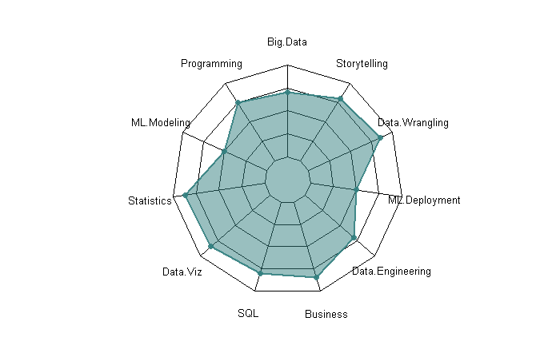

Here a collection of my past projects and contributions at Orange Sonatel, and the University of Caen. Throughout my academic journey and my recent work experience, I have worked on a diverse range of projects including sales forecasting, sales income analysis, product classification, customer segmentation, churn prediction, and web scraping to identify and contact prospects. These projects have enabled me to leverage my technical expertise and make good use of my analytical skills to deliver impactful solutions that drive growth and success for businesses. In this page, you can have a sneak peek at some of my Projects.
I have knowledge to also work on modeling a DataBase and Integration System (with Talend) to feed with business data.

Product classification
I worked with a team to help an agro-food business determine when selecting the best fruits (pineapples) to maximize the yield and taste of the fruits. For this, a data analysis (color, size, date of picking, etc.) was necessary. A PCA, and a predictive model was also built. This work was essential to achieve efficiency, accuracy and strategic decision-making for the business.
Churn Prediction
I've worked on Orange Senegal Telecom data to build a machine learning model based on Logistic Regression to predict potential clients having a certain behavior leading to churn. It informs strategic decisions about product development, pricing, and marketing. Churn prediction also helps companies anticipate future revenue and expenses, manage cash flow, and plan for growth.
Customer segmentation
Customer segmentation is a powerful marketing tool that helps companies tailor products, services, and marketing strategies to meet customers' specific needs. By identifying distinct customer groups, companies can create targeted campaigns and improve engagement. For that matter, i've build a model to identify different segments of client during my internship.
DataBase Management
My strong database management skills enables me to handle and analyze large volumes of data efficiently, leading to informed decision-making and valuable insights. For my projects, I can perform data extraction, transformation, and loading (ETL) processes to ensure data quality. Proficient in SQL and on some cloud-based platforms.
Dashboard & Reporting
Dashboards & reporting drive data-driven decisions. They visualize complex data, track performance, and facilitate collaboration. With insights and accountability, organizations make informed decisions for success.By leveraging data visualization and performance tracking, they stay ahead in a competitive landscape.
Data Analysis
Data analysis is critically important for businesses as it enables informed decision-making, provides a competitive advantage, improves operational efficiency, enhances customer understanding, and mitigates risks. By harnessing the power of data, businesses can drive growth, adapt to changing market dynamics, and thrive in the modern business landscape.